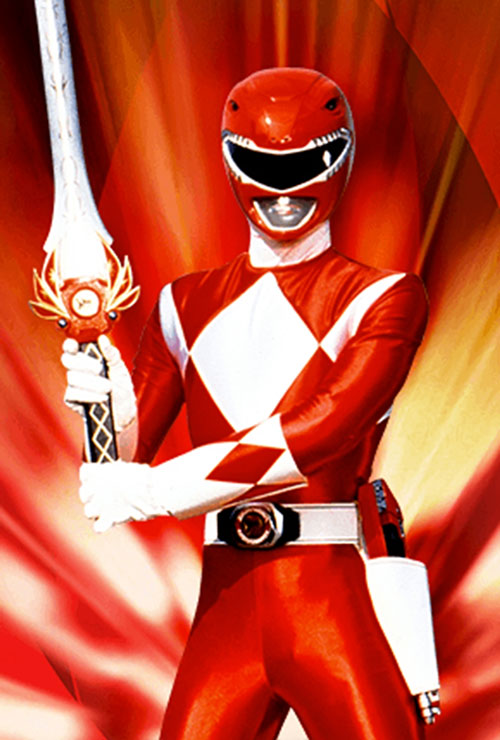

About Me
Jason Lee Scott was the first Red Ranger, officially named as such, as well as the original leader of the Mighty Morphin Power Rangers.
He later returned to become the second Gold Ranger of the Zeo Rangers, temporarily receiving those powers from Trey of Triforia.
Retroactively, he is also referred to as the Mighty Morphin Red Ranger or Red Mighty Morphin Ranger.